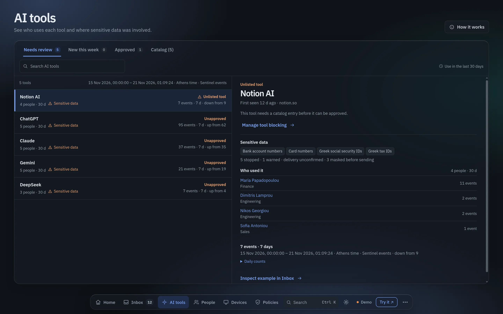
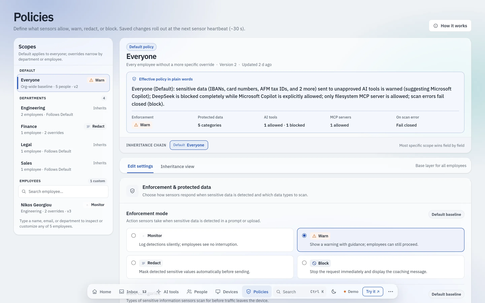
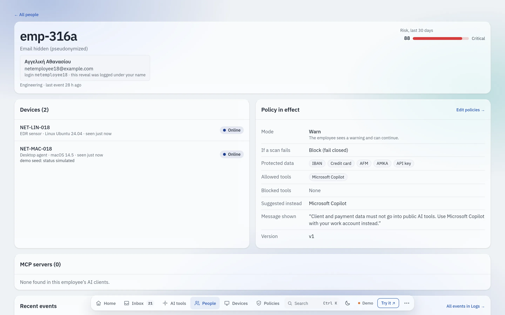
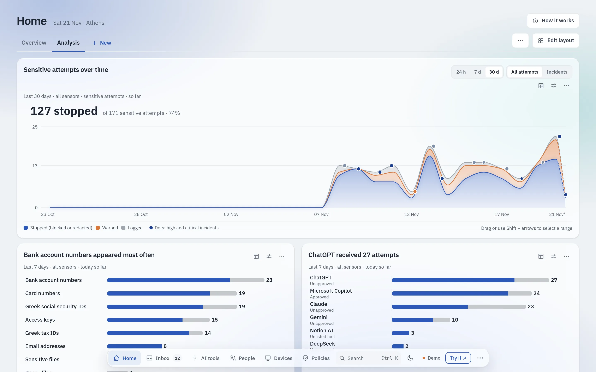

Click or drag on the background to summon cellsTap or swipe sideways to summon cells
Shadow-AI data protection
Use AI. Keep your data.
On-device OCR and masking for every AI tool your company uses, on your own servers. Typed prompts, screenshots and scanned PDFs are checked on the laptop before anything is sent. The AI tool gets masked text; the employee still gets an answer.
“Reconcile Q3 payments to GR16 0110 1250 0000 0001 2300 695 and flag mismatches.”
Sent to ChatGPT
“Reconcile Q3 payments to GR16 **** **** 0695 and flag mismatches.”
RedactedIBAN · mod-97 validReal value stayed on the laptop
The prompt contained a Greek IBAN. Sentinel masked it to GR16 **** **** 0695 before sending; the employee still gets an answer.
The cost
Shadow AI makes breaches more expensive
The global average cost of a data breach is $4.44M. Where staff use unapproved AI tools, it goes higher.
1 in 5
organisations reported a breach caused by shadow AI
+$670K
extra breach cost where shadow-AI use is high
65%
of shadow-AI incidents exposed personal data (53% across all breaches)
63%
of organisations have no policy to manage AI or detect shadow AI
Source: IBM Cost of a Data Breach Report 2025, Ponemon Institute research on 600 breached organisations.
The case
Seven slides, one problem, one answer
Use the arrows, the dots, or your keyboard’s arrow keys. On a phone, swipe.
Panopticon Sentinel
01 · The risk
AI prompts from an ordinary morning
Time
Team · tool
Prompt
Exposed
09:14
FinanceChatGPT, personal
“Reconcile Q3 payments to GR16 0110 1250 0000 0001 2300 695 and flag mismatches.”
IBAN
09:31
HRGemini
“Draft a warning letter for Nikos Raptopoulos, AMKA 15048512345, about repeated absences.”
NameAMKA
10:02
EngineeringClaude Code
“Deploy fails, here’s my .env: AWS_SECRET_ACCESS_KEY=wJalrXUtnFEMI…”
AWS key
10:47
SalesChatGPT
“Summarise this contract for the client meeting.” + contract_signed.png
NameAFMIBAN in image
Illustrative prompts. Each one contains a data type that Sentinel detects.
02 · The cost
Shadow AI is now a breach category of its own
1 in 5
organisations reported a breach caused by shadow AI
+$670K
extra breach cost where shadow-AI use is high
65%
of shadow-AI incidents exposed personal data (53% across all breaches)
40%
exposed intellectual property (33% across all breaches)
Source: IBM Cost of a Data Breach Report 2025, Ponemon Institute research on 600 breached organisations.
03 · The blind spot
Text filters cannot read the text inside an image
A pasted screenshot or scanned PDF carries IBANs, tax numbers and signatures as pixels. Keyword and pattern rules see none of it.
Competitor research · Nov 2026Of the 10 competing products we compared, only Palo Alto Enterprise DLP has confirmed OCR on images, and it runs in Palo Alto’s cloud. Microsoft Purview has partial support.
Source: Panopticon competitor research, November 2026; vendor documentation.
04 · The law
Regulators already expect control
GDPR4%
of worldwide annual turnover, or €20M if higher, for breaching the core principles, transfers included
NIS22%
of worldwide annual turnover, or €10M if higher, for essential entities
DORAJan 2025
Banks and insurers must manage ICT third-party risk, including the AI services staff use
EU AI ActFeb 2025
Article 4: staff who use AI must have sufficient AI literacy
GDPR Art. 83(5); NIS2 Art. 34(4); DORA, Regulation (EU) 2022/2554; EU AI Act Art. 4.
05 · On-device OCR
Read on the laptop, checked before sending
01 · Capture
Screenshot or scan
A screenshot or scanned PDF is pasted or attached to an AI tool.
02 · OCR
Read on the laptop
Text is extracted locally. No image is uploaded anywhere for analysis.
The same detectors check typed prompts, desktop apps and terminal agents.
06 · Data flow
What stays on the laptop
Stays on the laptop
The raw prompt text
Text read from screenshots and scans
Real values: IBAN, AFM, AMKA, keys, names
Leaves the laptop
To the AI tool: the masked prompt, or nothing if blocked
To your server: a masked event with data type, masked snippet and a one-way hash
To Panopticon: nothing; the backend runs on your servers
On the laptopGR16 0110 1250 0000 0001 2300 695
Sent onwardGR16 **** **** 0695
07 · Architecture
Where prompts are analysed
Product
Where prompts are analysed
OCR on images
Panopticon Sentinel
On the employee’s laptop
Yes, on the laptop
Palo Alto Enterprise DLP
Palo Alto cloud
Yes, in the cloud
Microsoft Purview
Microsoft 365 cloud
Partial
Netskope
Netskope cloud, inline
Not confirmed
Zscaler
Zscaler cloud proxy
Not confirmed
Harmonic Security
Harmonic SaaS, EU hosting on request
Not confirmed
SentinelOne Prompt
Vendor cloud; on-prem option since Mar 2026
Not confirmed
Source: Panopticon competitor research, Nov 2026. “Not confirmed” means we found no evidence either way.
← → to move
Worked example
A scanned contract, attached in ChatGPT
The contract is an image, so a text filter sees nothing. Sentinel reads it on the laptop, finds a name, a tax number and an IBAN, and applies your policy before the upload leaves.
ΣΥΜΒΑΣΗ ΠΑΡΟΧΗΣ ΥΠΗΡΕΣΙΩΝ
Πελάτης:
Μαρία Παπαδοπούλου
ΑΦΜ 123456783
IBAN GR16 0110 1250 0000 0001 2300 695
Αμοιβή: €18.400 ανά έτος
contract_signed.png · illustrative document
The employee sees
Blocked
“Client and payment data must not go into public AI tools. Use Microsoft Copilot with your work account instead.”
Your dashboard records
Where
Sales · ChatGPT · image
Found
name, AFM, IBAN
Action
blocked
Stored as
GR16 **** **** 0695
Why Sentinel
Built for the data your company actually handles
01
On-device OCR
Screenshots and scanned PDFs are read on the laptop.
02
Raw data stays local
Real values never leave the employee’s machine.
03
Self-hosted
Dashboard and logs run on your own servers.
04
Greek identifiers
AFM, AMKA, Greek IBANs and names, checked with checksums.
05
Every AI surface
Browser, desktop apps, terminal agents, MCP, local models.
06
Redaction
Employees still get an answer. Log, warn or block also available.
07
Company accounts
Personal AI accounts refused; approved tools stay open.
08
Fail-closed option
If a scan fails, the policy can block the send.
The dashboard
One calm place to see and decide
Runs on your servers. New detections appear within seconds; policy changes roll out in about 30.




Home The week at a glance: stopped attempts, the most important incidents, shadow AI and the riskiest people.
Home
Stopped attempts, people involved, unapproved AI tools in use and AI agents detected, last 7 days.
Most important this week
Severity first, then what was stopped: an AFM pasted into an unapproved tool, a decoy file opened by an agent.
Shadow AI radar
Unapproved tools in use, ranked by tool risk and event count.
Incident inbox
Incidents ranked by risk. Repeated traffic folds into one incident, so 71 similar detections need one decision.
Why it was flagged
Each incident explains itself, for example a decoy “VPN passwords” file opened by an agent process.
Live feed
New detections appear within seconds.
Policies and AI tools
The effective policy in plain words, per company, department or person. Scan errors fail closed. Every tool that needs review, with who used it and whether sensitive data was involved.
Devices and people
Desktop agents (Linux and macOS), browser extensions and the Linux EDR sensor, with status and policy version. A 30-day risk score per person, highest first.
Next step
Use AI. Keep your data.
Start with a free 30-day Shadow-AI Discovery Audit on up to 50 laptops. You get an inventory of every AI tool in use and a risk report mapped to GDPR, the AI Act and NIS2.